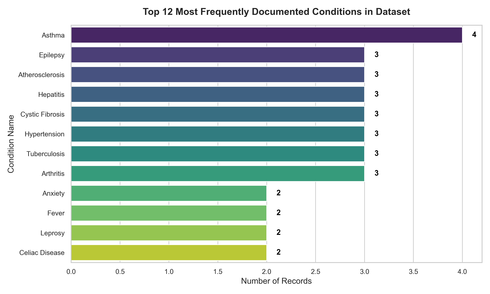
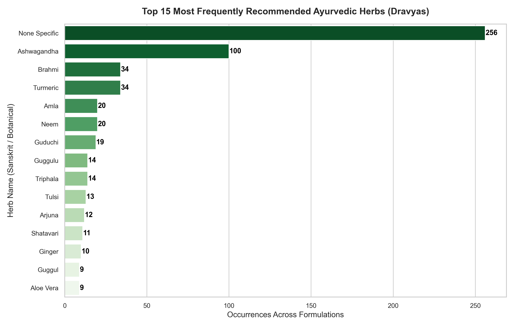
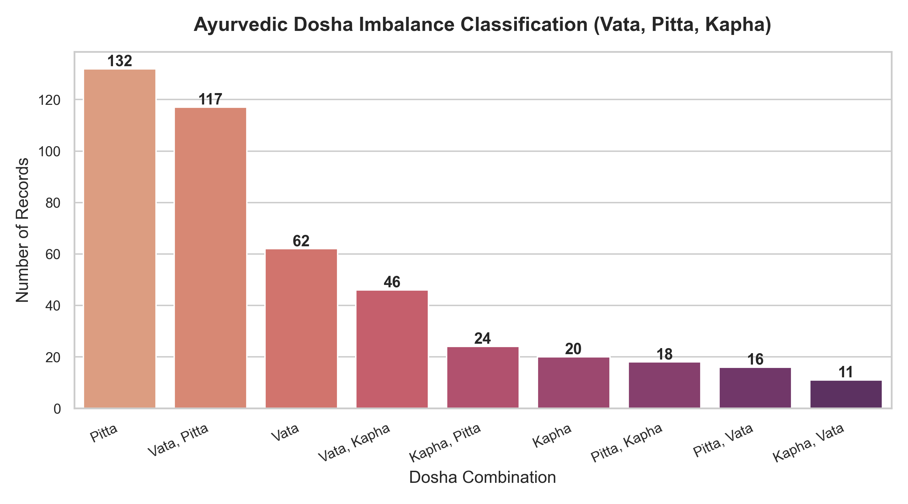
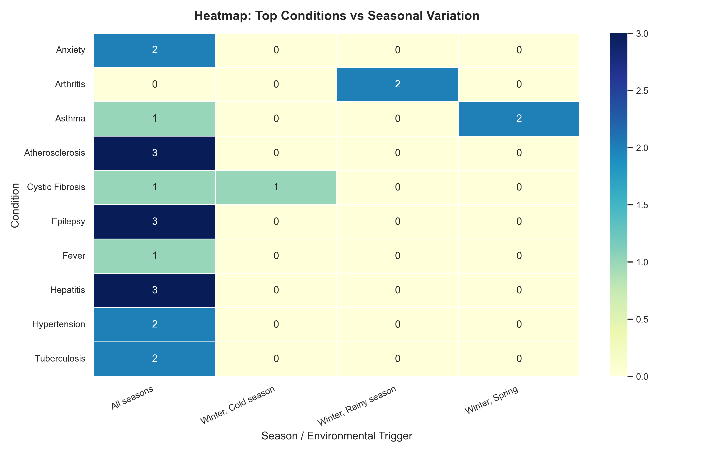

Project purpose
A safer alternative to ungrounded health text generation.
Instead of generating treatments, the application retrieves relevant references from the local AyurGenixAI dataset. Results are explicitly labelled as Symptom Similarity Scores, not clinical confidence or diagnostic probability.
Users can explore herbs, conditions, multilingual names, formulations, lifestyle notes, and EDA findings. An emergency red-flag screen takes priority over any wellness result.
AI workflow
From symptoms to explainable dataset matches.
Normalize
Clean symptom text and map selected familiar Hindi, Marathi, and colloquial terms to the dataset vocabulary.
Safety screen
Rule-based red flags for breathing difficulty, chest pain, seizures, bleeding, and other urgent indicators stop recommendations.
Retrieve
TF-IDF vectors with unigram and bigram features are ranked with cosine similarity.
Explain
Show matched symptoms, similarity score, and optional seasonal or dosha context without claiming diagnosis.
Responsible AI features
Designed for transparency and privacy.
Emergency triage
High-risk phrases display immediate-care guidance instead of herbs or self-care suggestions.
Opt-in history
Symptom searches are saved locally only when the visitor chooses to save them.
Plant image workflow
Uploads are validated, capped at 5 MB, processed locally, and deleted afterward. A trained model is required before identification.
Exploratory data analysis
What the dataset reveals.




Run the complete application
GitHub Pages hosts this showcase. Flask runs elsewhere.
GitHub Pages is static hosting, so it cannot execute the Python recommendation engine, SQLite history, image upload handler, or local plant classifier.
For the working application, deploy this repository to Render, Railway, or PythonAnywhere with gunicorn app:app. Then replace the GitHub link above with your repository URL and add a link to your live deployment.